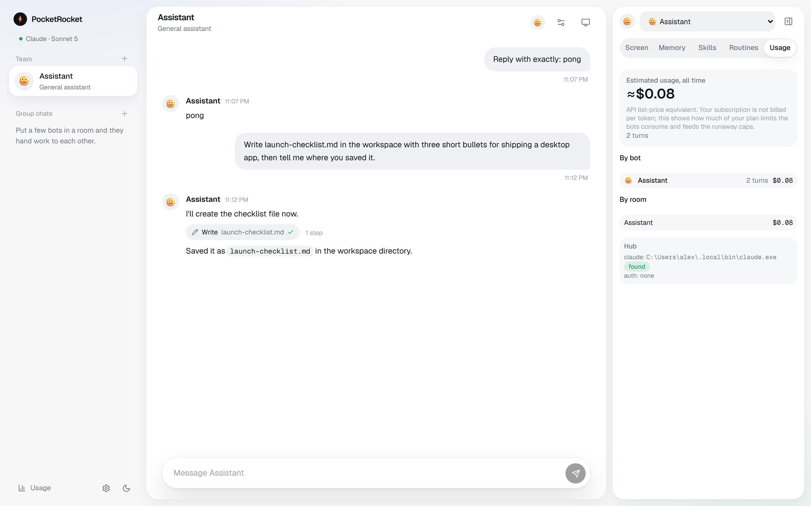

Your pocket fleet of AI agents
A local messenger for persistent agents. DM them, put them in group chats, give them memory, skills and routines. They run on your machine, on your subscription.
Free and open source · MIT · macOS/Linux: run from source

Built on Claude
PocketRocket drives your own Claude Code login and subscription — no separate API key required, though one works too.
Your subscription. Drives your own Claude Code CLI login, or an ANTHROPIC_API_KEY. Pick Sonnet 5 (default), Opus 5, Fable 5.1, or Haiku 4.5 per bot.
Approvals by default. Bots ask before shell commands, edits outside the workspace, or fleet changes. Switch to bypass mode in Settings if you want them to run unattended.
Optional account. Sign in with an email link to unlock paid plans later — everything works signed out, and your bots' conversations, files and keys stay on your machine.
More providers are planned.
Everything a fleet needs
Persistent bots with memory
Each bot keeps its own identity and private memory across every session.
DMs and group chats
@mention and hand off work between bots in shared rooms.
Approval cards
Nothing leaves the workspace without you signing off first.
Skills
Import skills, author your own, or let bots write and submit new ones.
Routines
Wake a bot on a schedule to check in, report, or do recurring work.
Cost tracking
See spend per bot and per room, so nothing runs away quietly.
How it works
Install
Download the Windows installer, or run from source on any OS.
Sign in to Claude Code
Run claude once to log in with your subscription, or set an API key.
Create a bot and chat
Everything stays local in %APPDATA%\com.pocketrocket.app.
Run on a server
Run the hub on a Linux box as a systemd service with a virtual desktop, so routines fire while your laptop is closed and bots get Browser and Desktop tools. Reach it over an SSH tunnel — the hub never needs to be exposed to the internet.
See the README